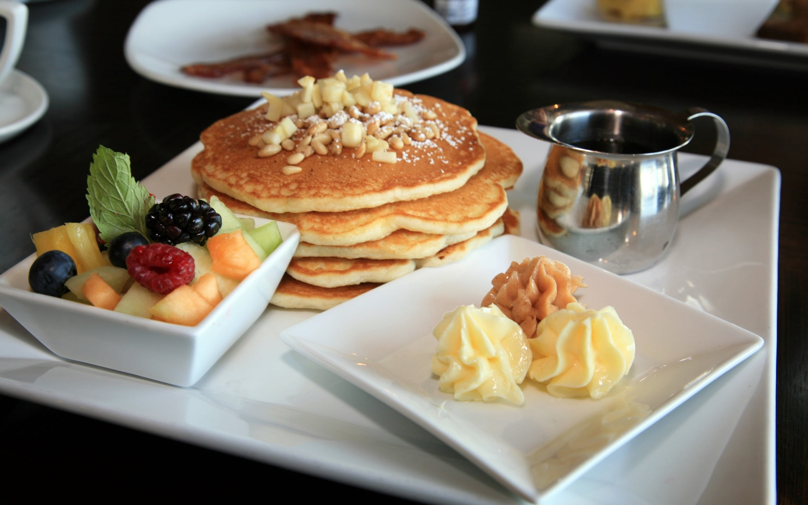

Pan Cakes

Introduction
The pancake is far more than just a modern breakfast food—it is actually one of
humanity's oldest and most universal culinary inventions. Archeological evidence
shows that our ancestors were mixing wild starch and water to bake flat cakes on hot
stones over 30,000 years ago, long before the dawn of agriculture. From the
honey-drizzled tiganites of ancient Greece to the medieval European traditions of
\Pancake Day, almost every culture across history independently created its own version.
While the fluffy American stack we love today was perfected in the 1800s thanks to the
invention of baking powder, the core concept remains completely unchanged: a simple,
global comfort food that bridges thousands of years of human history.
Ingredients Used
Dry Ingredients
- All Purpose flour
- Baking Powder
Wet Ingredients
- Milk
- Sugar
- Egg
- Cooking Oil
- Vanilla Essense
Serving and Topping Ingredients
- Sliced Mixed Fruits
- Peanuts
- Syrup or Honey
Preparation
- Combine Dry Ingredients: Sift the flour, baking powder, sugar, and salt together into a
large bowl to remove lumps.
- Whisk Wet Ingredients: In a separate medium bowl, whisk together the milk, egg, and
cooled melted butter until uniform.
- Mix the Batter: Make a well in the center of the dry ingredients, pour in the wet mixture,
and fold gently. Do not overmix. A few small lumps are perfectly fine and keep the pancakes tender.
- Preheat and Grease: Heat a good quality non-stick skillet or griddle over medium heat
and lightly brush it with a touch of butter or oil.
- Pour Batter: Scoop roughly ¼ cup of batter onto the hot skillet for each pancake.
- Flip and Finish: Cook for 2 to 3 minutes until bubbles appear on the top surface and
the edges look set and dry.
Flip using a wide spatula and cook the other side for another minute until golden brown.